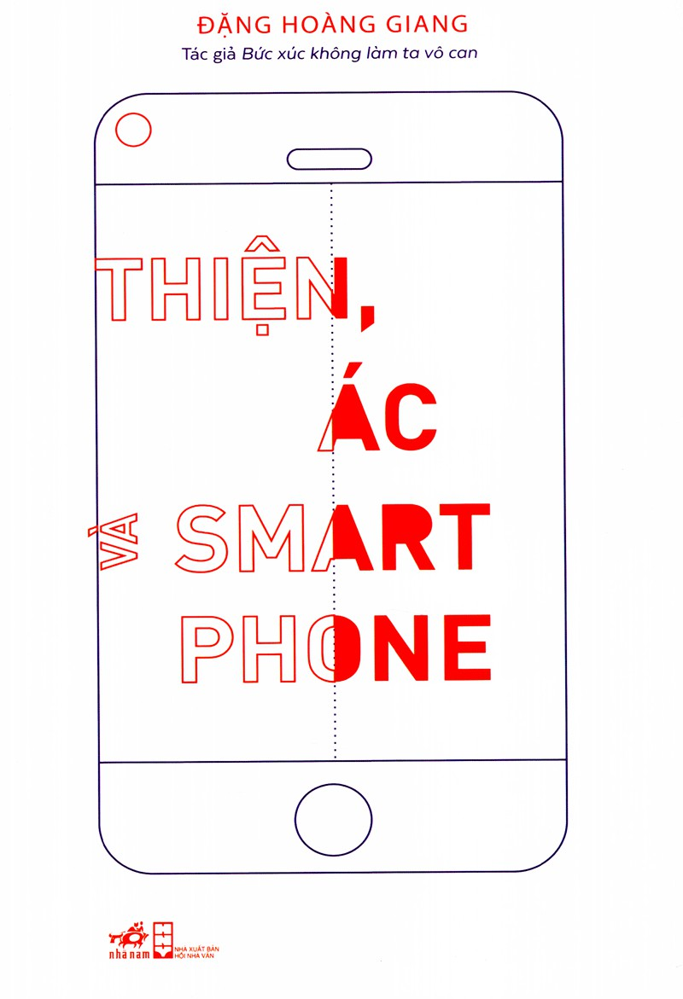

« Back
Thiện Ác Và Smartphone
By Đặng Hoàng Giang

Giới Thiệu
Tác Giả
Nhận Xét
LỜI NÓI ĐẦU
PHẦN 1“NHÂN DANH CÔNG LÝ, HÃY LÀM NHỤC CHÚNG”
CÔNG LÝ CỦA CUỒNG NỘ VÀ SỰ TRẢ THÙ CỦA ĐÁM ĐÔNG
XÉT XỬ LƯU ĐỘNG: SHOW DIỄN CỦA CÔNG LÝ
LÀM NHỤC CÔNG CỘNG: MỘT LỊCH SỬ NGHÌN NĂM
PHẦN 2LÀM NHỤC MUA VUI VÀ TÀN NHẪN GIẢI KHUÂY
CÁI GIÁ CỦA SỰ THÔ LỖ
PHẦN 3BẢY BƯỚC ĐI CỦA CĂM GHÉT
50 SẮC THÁI CỦA CĂM GHÉT
TÀN NHẪN TỚI TỪ ĐÂU:
PHẦN 4GIÃ TỪ VĂN HÓA LÀM NHỤC
GIÃ TỪ VĂN HÓA LÀM NHỤC
“VÀ CỨ NHƯ THẾ CHO ĐẾN VÔ CÙNG”: SUY NGẪM VỀ TỬ TẾ
TA CẦN BIẾT BAO NHIÊU VỀ CUỘC ĐỜI NGƯỜI KHÁC?
PHẦN 5TA NÓI Gì KHI NÓI VỀ THA THỨ
TỘI LỖI VÀ...
TA NÓI GÌ KHI NÓI VỀ THA THỨ:
TA NÓI Gì KHI NÓI VỀ THA THỨ:
NHÂN PHẨM ĐÁNG GIÁ BAO NHIÊU?
PHẦN KẾTDỰ ÁN TRẮC ẨN
“CHÚC CON RA VỀ BÌNH AN”
LỜI BẠT
Chú Thích